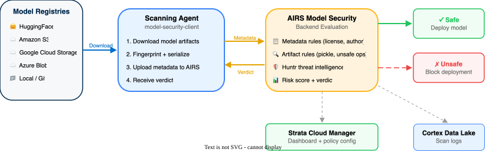

AIRS AI Model Security
End-to-end guide: license activation and SCM configuration through validated model security scanning
This guide follows a configuration-first approach. All licensing, deployment profiles, security groups, and scanning rules are configured in Strata Cloud Manager (SCM) before installing the scanning agent or running any scans. This ensures models are evaluated against a fully defined security posture from the first scan.
Product scope: AIRS AI Model Security provides pre-deployment vulnerability scanning for AI/ML models at the registry level. It detects malicious models, backdoors, unsafe operations, and supply-chain risks before models reach production.
Management platform: Strata Cloud Manager (SCM). Steps are shown for both the SCM UI and the API where paths diverge.
Architecture Overview

AI Model Security is a SaaS application that scans AI/ML models for security threats before deployment. It operates at the registry level — models are scanned before they reach production, not inline during inference.
AI/ML models can execute arbitrary code on load through deserialization attacks, Keras Lambda layers, or GGUF template injection. Traditional security tooling does not check for this. AI Model Security fills that gap by evaluating models against configurable security rules and producing a clear ALLOWED or BLOCKED verdict before the model ever reaches a runtime environment.
Threat intelligence is continuously updated by the Huntr community — a network of 16,000+ security researchers who discover novel attack vectors through bug bounty programs and a strategic partnership with Hugging Face.
| Component | Role | Endpoint |
|---|---|---|
| Strata Cloud Manager (SCM) | Configure security groups, view scan results, manage IAM | stratacloudmanager.paloaltonetworks.com |
| Management API | CRUD security groups and rules programmatically | api.sase.paloaltonetworks.com/aims/mgmt |
| Data Plane API | Execute scans, retrieve results and evaluations | api.sase.paloaltonetworks.com/aims/data |
| Auth Endpoint | OAuth2 bearer token generation | auth.apps.paloaltonetworks.com |
| Scanning Agent | model-security-client Python package (CLI + SDK) |
Private Google Artifact Registry (authenticated via SCM) |
| Cortex Data Lake | Centralized logging (auto-provisioned with SCM Pro) | — |
| Huntr Community | 16,000+ researchers feeding threat intelligence | protectai.com/insights |
The scanning agent runs locally on the user’s machine or CI runner. It downloads model artifacts from the source registry, computes a content fingerprint, and uploads scan data to the AIRS backend. The backend evaluates all enabled rules and returns a verdict.
For HuggingFace sources, the AIRS backend fetches model metadata directly — the scanning agent does not download model files locally. For object storage (S3, GCS, Azure Blob) and local sources, the scanning agent downloads the model to a local cache directory before uploading scan data.
AI Model Security evaluates models against three primary threat categories using two rule types.
Threat Categories
| Category | Risk | Examples |
|---|---|---|
| Deserialization Threats | Malicious code executes when a model is loaded (model.load()) |
PyTorch payloads, Joblib injection, Keras exploits, GGUF template code, zip-slip attacks |
| Backdoor Threats | Hidden parallel data flow paths in model architecture | ONNX models with extra computation graphs that exfiltrate data or alter outputs |
| Runtime Threats | Code executes during model inference, not just loading | Keras Lambda layers with embedded Python, TensorFlow SavedModel arbitrary ops |
Rule Types
| Type | What It Checks | Speed | Examples |
|---|---|---|---|
| METADATA | Model metadata from the source platform | Fast | License checks, author verification, org verification, blocked model list |
| ARTIFACT | Deep binary analysis of model files | Slower (proportional to model size) | Deserialization threats, backdoor detection, runtime code execution, format validation |
Security Groups
A security group is a collection of rules bound to a single source type. The source type binding is permanent — it cannot be changed after creation. Each tenant is provisioned with seven default security groups, one per supported source type (HuggingFace, S3, GCS, Azure Blob, Local, Artifactory, GitLab).
Rules & Rule States
Each security group contains rule instances that can be set to one of three states:
| State | Effect on Scan |
|---|---|
BLOCKING | A rule violation causes the overall scan verdict to be BLOCKED. CLI exits non-zero. |
ALLOWING | Violation is recorded but does not affect the overall verdict. |
DISABLED | Rule is not evaluated during the scan. |
Scan Verdicts
| Verdict | Meaning |
|---|---|
| ALLOWED | Model passed all BLOCKING rules |
| BLOCKED | At least one BLOCKING rule failed |
| PENDING | Scan is still processing |
| ERROR | Scan encountered an error during evaluation |
Content-Based Fingerprinting
Models are tracked by a content fingerprint computed from the model artifacts, not by storage location. The same model scanned from S3 and HuggingFace produces the same fingerprint and maps to the same model version. A modified model under the same name produces a new fingerprint and is registered as a new version.
Content-based fingerprinting requires model-security-client version 1.1.0 or higher. Earlier versions do not produce cross-source compatible fingerprints.
Prerequisites
AI Model Security is licensed through NGFW credits, not as a standalone SKU.
| Requirement | Details |
|---|---|
| License type | Software/Cloud NGFW Credits → Deployment Profile → Prisma AIRS → Model Security |
| CSP portal | Active Palo Alto Networks Customer Support Portal account with credit allocation |
| SCM access | Auto-provisioned when deployment profile is activated |
| Cortex Data Lake | Auto-provisioned with SCM Pro (no separate license) |
| Requirement | Details |
|---|---|
| CSP account | Palo Alto Networks Customer Support Portal account with access to NGFW credit pool |
| SCM role (UI access) | Superuser for all apps and services OR a custom role with AI Model Security enabled |
| Service account (API/SDK) | Required for model-security-client. Minimum permissions: ai_ms_pypi_auth, ai_ms.scans, ai_ms.security_groups |
| Regions | AI Model Security is available in 4 regions: US, EU-Germany, India, Singapore |
Store the Client Secret immediately after creating a service account. It cannot be retrieved later — only regenerated.
The model-security-client runs on the machine that initiates scans. This can be a developer workstation, a CI/CD runner, or a dedicated scanning host.
| Resource | Minimum | Recommended |
|---|---|---|
| CPU | 2 cores | 4+ cores |
| RAM | 2 GB | 4 GB (local scans can consume up to 4 GB depending on model size) |
| Disk | Model size (HuggingFace: none needed) | 10 GB+ for local and object storage scanning |
| Python | 3.11 | Latest 3.12 |
| OS | Ubuntu 20.04+, RHEL 8+, macOS 11+, Windows 10/11 (WSL2) | — |
The scanning agent requires outbound HTTPS (443) access to the following endpoints:
| Destination | Purpose |
|---|---|
api.sase.paloaltonetworks.com/aims | Management and Data Plane API calls |
auth.apps.paloaltonetworks.com | OAuth2 token generation |
huggingface.co | HuggingFace model scanning (if applicable) |
| Cloud storage endpoints | *.amazonaws.com (S3), *.googleapis.com (GCS), *.blob.core.windows.net (Azure) — as applicable |
| Private PyPI registry | Google Artifact Registry for model-security-client package installation |
If the scanning agent is behind a corporate firewall or proxy, ensure the above destinations are allowed on port 443 before proceeding to installation.
| Registry | Source Type | URI Format |
|---|---|---|
| Hugging Face | HUGGING_FACE | https://huggingface.co/<org>/<model> |
| Amazon S3 | S3 | s3://<bucket>/<path> |
| Google Cloud Storage | GCS | gs://<bucket>/<path> |
| Azure Blob Storage | AZURE | https://<account>.blob.core.windows.net/<container>/<path> |
| JFrog Artifactory | ARTIFACTORY | https://<instance>.jfrog.io/<path> |
| GitLab Model Registry | GITLAB | https://<instance>/-/ml/models/<path> |
| Local filesystem | LOCAL | Absolute or relative path to model directory |
Only public HuggingFace repositories are supported for direct scanning. For private HuggingFace models, download the model locally first and scan using the LOCAL source type.
Foundation — License Activation & Deployment Profiles
The deployment profile allocates NGFW credits to AI Model Security and provisions the service on the selected tenant.
- Log in to the Customer Support Portal (CSP).
- Navigate to
Products→Software/Cloud NGFW Credits. - Locate the credit pool and click
Create Deployment Profile. - Select
Prisma AIRS→Model Security. - Enter a profile name (e.g.,
AI Model Security) and clickCalculate Estimated Cost. - Review the credit allocation and click
Create Deployment Profile. - Click
Finish Setupto redirect to the Hub. - Select the CSP account and select or create a tenant.
- Select the deployment profile. For
Additional Services, selectNone. - Agree to the terms and click
Activate.
Deployment profile activation can take up to 2 hours. If creating a new tenant, allow an additional 15–20 minutes for tenant provisioning before activation begins.
Navigate to Common Services → Tenant Management → Deployment Profiles in the Hub. Confirm the AI Model Security profile shows Status: Complete.
Confirm the signed-in user has the correct role to access AI Model Security in SCM.
- Navigate to
Strata Cloud Manager→Common Services→Identity & Access. - Verify the current user has the role
Superuser for all apps and services, or a custom role with AI Model Security enabled.
To create a custom role with minimum required permissions:
- Navigate to
Roles→Custom Roles. - Click
Add Role. - Enable the
AI Model Securityapplication. - For API access, ensure these permissions are included:
ai_ms_pypi_auth,ai_ms.scans,ai_ms.security_groups. - Click
Save.
Navigate to AI Security → AI Model Security in the SCM sidebar. The Model Security dashboard loads without permission errors.
The model-security-client SDK and CLI authenticate using OAuth2 client credentials. A dedicated service account isolates scanning credentials from interactive user accounts.
- Navigate to
Common Services→Identity & Access→Service Accounts. - Click
Add Service Account. - Enter a name (e.g.,
model-security-scanner). - Assign the custom role created in Step 3.2, or
Superuser. - Click
Create. - Immediately copy the
Client IDandClient Secret.
Create a service account via the IAM API:
curl -X POST "https://api.sase.paloaltonetworks.com/iam/v1/service_accounts" \
-H "Authorization: Bearer ${ACCESS_TOKEN}" \
-H "Content-Type: application/json" \
-d '{
"name": "model-security-scanner",
"description": "Service account for AI Model Security scanning"
}'The response contains the client_id and client_secret. Store them immediately.
The Client Secret is displayed only once at creation time. It cannot be retrieved later — only regenerated. Store it in a secrets manager or secure vault before closing the dialog.
Record the following values — they are required for SDK installation and scanning in Phase 5:
| Value | Where to Find It | Environment Variable |
|---|---|---|
| Client ID | Service account creation dialog | MODEL_SECURITY_CLIENT_ID |
| Client Secret | Service account creation dialog | MODEL_SECURITY_CLIENT_SECRET |
| TSG ID | Common Services → Tenant Management | TSG_ID |
| API Endpoint | Region-specific (see Prerequisites) | MODEL_SECURITY_API_ENDPOINT |
Test the service account credentials by requesting an OAuth2 token:
curl -X POST "https://auth.apps.paloaltonetworks.com/oauth2/access_token" \
-H "Content-Type: application/x-www-form-urlencoded" \
-u "${MODEL_SECURITY_CLIENT_ID}:${MODEL_SECURITY_CLIENT_SECRET}" \
-d "grant_type=client_credentials&scope=tsg_id:${TSG_ID}"A successful response returns a JSON object with access_token and expires_in fields.
Security Groups & Rules Configuration
Each tenant is provisioned with seven default security groups, one per supported source type. Review them before creating custom groups.
- Navigate to
AI Security→AI Model Security→Model Security Groups. - Review the list of pre-created groups.
curl -X GET "https://api.sase.paloaltonetworks.com/aims/mgmt/v1/security-groups" \
-H "Authorization: Bearer ${ACCESS_TOKEN}"| Default Group Name | Source Type |
|---|---|
Default LOCAL | Local Storage |
Default HUGGING_FACE | Hugging Face |
Default S3 | Amazon S3 |
Default GCS | Google Cloud Storage |
Default AZURE | Azure Blob Storage |
Default ARTIFACTORY | JFrog Artifactory |
Default GITLAB | GitLab Model Registry |
Each security group is permanently bound to its source type at creation. The source type cannot be changed later. To scan the same model from two different registries, use two separate security groups.
Seven default security groups appear in the list, each with a distinct source type and pre-populated rules.
Each security group contains rule instances that are evaluated during scans. Rules are organized into three categories.
Common Rules (All Source Types)
| Rule | Type | Default State | What It Checks |
|---|---|---|---|
| Load Time Code Execution Check | ARTIFACT | BLOCKING | Deserialization attacks, GGUF template code, zip-slip vulnerabilities |
| Runtime Code Execution Check | ARTIFACT | BLOCKING | Keras Lambda layers, TensorFlow SavedModel arbitrary code |
| Known Framework Operators Check | ARTIFACT | BLOCKING | Unknown custom operators in TF SavedModel |
| Model Architecture Backdoor Check | ARTIFACT | BLOCKING | Parallel data flow paths in ONNX models |
| Suspicious Model Components Check | ARTIFACT | ALLOWING | Components that could enable future exploitation |
| Stored In Approved File Format | ARTIFACT | ALLOWING | Validates against allowed format list |
| Stored In Approved Location | METADATA | ALLOWING | Validates storage prefix against approved list |
HuggingFace-Only Rules
| Rule | Type | Default State | What It Checks |
|---|---|---|---|
| License Exists | METADATA | ALLOWING | Model has any license declared |
| License Is Valid For Use | METADATA | ALLOWING | License matches approved list (default: apache-2.0, mit, bsd-3.0) |
| Model Is Blocked | METADATA | BLOCKING | Model appears on explicit blocklist |
| Organization Verified By Hugging Face | METADATA | ALLOWING | Publishing org has HuggingFace verification status |
| Organization Is Blocked | METADATA | BLOCKING | Publishing org appears on blocklist |
Click any security group and navigate to its rule instances. Confirm the rules listed above appear with their default states.
Adjust rule states based on organizational security requirements. Each rule can be set to BLOCKING, ALLOWING, or DISABLED.
- Navigate to
AI Security→AI Model Security→Model Security Groups. - Click the security group to configure.
- For each rule, click the state dropdown and select the desired state.
- Click
Save.
List rule instances for a security group:
curl -X GET "https://api.sase.paloaltonetworks.com/aims/mgmt/v1/security-groups/${GROUP_UUID}/rule-instances" \
-H "Authorization: Bearer ${ACCESS_TOKEN}"Update a rule instance state:
curl -X PUT "https://api.sase.paloaltonetworks.com/aims/mgmt/v1/security-groups/${GROUP_UUID}/rule-instances/${RULE_UUID}" \
-H "Authorization: Bearer ${ACCESS_TOKEN}" \
-H "Content-Type: application/json" \
-d '{
"state": "BLOCKING"
}'For initial deployment, set all threat-detection rules (Load Time Code Execution, Runtime Code Execution, Model Architecture Backdoor) to BLOCKING. Set governance rules (Stored In Approved File Format, License Is Valid For Use) to ALLOWING until the approved format and license lists are tuned to the organization’s model portfolio.
Reload the security group detail page. Each rule displays the updated state.
Several rules accept custom parameter values that control what is approved or blocked.
| Parameter | Applicable Rules | Default Values |
|---|---|---|
approved_formats | Stored In Approved File Format | safetensors, safetensors_index, json, yaml |
approved_licenses | License Is Valid For Use | apache-2.0, mit, bsd-3.0 |
approved_locations | Stored In Approved Location | s3, gs, / |
deny_orgs | Organization Is Blocked | (empty) |
denied_org_models | Model Is Blocked | (empty) |
- Open the security group and click the rule to customize.
- Edit the parameter values in the rule detail panel.
- Click
Save.
Update rule parameters via the rule instance endpoint. Include the field_values object:
curl -X PUT "https://api.sase.paloaltonetworks.com/aims/mgmt/v1/security-groups/${GROUP_UUID}/rule-instances/${RULE_UUID}" \
-H "Authorization: Bearer ${ACCESS_TOKEN}" \
-H "Content-Type: application/json" \
-d '{
"state": "BLOCKING",
"field_values": {
"approved_formats": ["safetensors", "safetensors_index", "json", "yaml", "onnx"]
}
}'Reopen the rule detail. The updated parameter values are displayed in the configuration panel.
Create custom security groups when different rule configurations are needed for the same source type — for example, a strict group for production models and a permissive group for experimental models.
- Navigate to
AI Security→AI Model Security→Model Security Groups. - Click
Create a Group. - Enter a name (e.g.,
Production-S3-Strict). - Select the source type. This binding is permanent.
- Click
Create. - Configure rule states and parameters as described in Steps 4.3 and 4.4.
model-security create-security-group \
--name "Production-S3-Strict" \
--source-type S3curl -X POST "https://api.sase.paloaltonetworks.com/aims/mgmt/v1/security-groups" \
-H "Authorization: Bearer ${ACCESS_TOKEN}" \
-H "Content-Type: application/json" \
-d '{
"name": "Production-S3-Strict",
"source_type": "S3"
}'The response includes the new group’s uuid. Use it for subsequent rule configuration and scan requests.
The new security group appears in the group list with the selected source type and a full set of default rule instances ready for configuration.
Install Agent & Scan Models
The model-security-client Python package provides both the CLI and SDK. It is hosted on a private PyPI registry authenticated through SCM.
Generate the PyPI Authentication URL
Run the following script to obtain the authenticated PyPI URL. Replace the placeholder values with the credentials from Step 3.3.
export MODEL_SECURITY_CLIENT_ID="your-client-id"
export MODEL_SECURITY_CLIENT_SECRET="your-client-secret"
export TSG_ID="your-tsg-id"
# Obtain OAuth2 token
ACCESS_TOKEN=$(curl -s -X POST \
"https://auth.apps.paloaltonetworks.com/oauth2/access_token" \
-H "Content-Type: application/x-www-form-urlencoded" \
-u "${MODEL_SECURITY_CLIENT_ID}:${MODEL_SECURITY_CLIENT_SECRET}" \
-d "grant_type=client_credentials&scope=tsg_id:${TSG_ID}" \
| python3 -c "import sys,json; print(json.load(sys.stdin)['access_token'])")
# Retrieve private PyPI URL
PYPI_URL=$(curl -s -X GET \
"https://api.sase.paloaltonetworks.com/aims/mgmt/v1/pypi/authenticate" \
-H "Authorization: Bearer ${ACCESS_TOKEN}" \
| python3 -c "import sys,json; print(json.load(sys.stdin)['pypi_url'])")
echo "PyPI URL: ${PYPI_URL}"Install the Package
Use the authenticated URL as an extra index:
pip install "model-security-client[all]" --extra-index-url "${PYPI_URL}"Available extras for selective dependency installation:
| Extra | Installs |
|---|---|
[all] | All cloud SDKs (recommended for initial setup) |
[aws] | boto3 for S3 access |
[gcp] | google-cloud-storage for GCS access |
[azure] | azure-storage-blob for Azure Blob access |
[artifactory] | JFrog Artifactory SDK |
[gitlab] | GitLab API client |
Run model-security --version. The installed version prints to the terminal. Confirm it is 1.1.0 or higher for full fingerprinting support.
The CLI and SDK read credentials from environment variables. Set them in the shell session or CI/CD pipeline configuration.
export MODEL_SECURITY_CLIENT_ID="your-client-id"
export MODEL_SECURITY_CLIENT_SECRET="your-client-secret"
export TSG_ID="your-tsg-id"
export MODEL_SECURITY_API_ENDPOINT="https://api.sase.paloaltonetworks.com/aims"The default endpoint serves the US region. For other regions, use the region-specific URL provided in the deployment profile documentation.
Run env | grep MODEL_SECURITY and env | grep TSG_ID. All four variables are set and non-empty.
HuggingFace scans are the fastest way to validate the end-to-end scanning pipeline. The AIRS backend fetches model metadata directly — no local download is required.
model-security scan \
--security-group-uuid "${HF_GROUP_UUID}" \
--model-uri "https://huggingface.co/microsoft/DialoGPT-medium" \
--model-name "dialogpt-medium"Replace ${HF_GROUP_UUID} with the UUID of the Default HUGGING_FACE security group from Step 4.1.
from model_security_client.api import ModelSecurityAPIClient
client = ModelSecurityAPIClient(
base_url="https://api.sase.paloaltonetworks.com/aims"
)
result = client.scan(
security_group_uuid="your-hf-group-uuid",
model_uri="https://huggingface.co/microsoft/DialoGPT-medium",
model_name="dialogpt-medium"
)
print(f"Verdict: {result.eval_outcome}")
print(f"Model Version: {result.model_version_uuid}")Optional parameters for HuggingFace scans:
| Parameter | Purpose | Example |
|---|---|---|
--model-version | Scan a specific commit hash instead of latest | --model-version "abc123" |
--allow-patterns | Only scan files matching these patterns | --allow-patterns "*.safetensors" |
--ignore-patterns | Skip files matching these patterns | --ignore-patterns "*.md" "*.txt" |
HuggingFace scanning supports public repositories only. For private HuggingFace models, download the model locally and scan using a LOCAL security group.
The CLI outputs the scan verdict: ALLOWED or BLOCKED. A scan UUID is printed for retrieving detailed results.
Object storage scans download the model to a local cache directory, compute the fingerprint, then upload scan data to the AIRS backend. Ensure cloud-specific credentials are configured before scanning.
Amazon S3
model-security scan \
--security-group-uuid "${S3_GROUP_UUID}" \
--model-uri "s3://my-models-bucket/production/bert-base" \
--model-name "bert-base-production"Google Cloud Storage
model-security scan \
--security-group-uuid "${GCS_GROUP_UUID}" \
--model-uri "gs://my-models-bucket/production/bert-base" \
--model-name "bert-base-production"Azure Blob Storage
model-security scan \
--security-group-uuid "${AZURE_GROUP_UUID}" \
--model-uri "https://myaccount.blob.core.windows.net/models/bert-base" \
--model-name "bert-base-production"from model_security_client.api import ModelSecurityAPIClient
client = ModelSecurityAPIClient(
base_url="https://api.sase.paloaltonetworks.com/aims"
)
# S3 example
result = client.scan(
security_group_uuid="your-s3-group-uuid",
model_uri="s3://my-models-bucket/production/bert-base",
model_name="bert-base-production"
)
print(f"Verdict: {result.eval_outcome}")The scanning agent uses the native cloud SDK for downloads. Ensure credentials are configured in the environment: AWS_ACCESS_KEY_ID / AWS_SECRET_ACCESS_KEY for S3, GOOGLE_APPLICATION_CREDENTIALS for GCS, or Azure CLI login for Blob Storage.
The CLI outputs the scan verdict and scan UUID. The model appears in the SCM dashboard under AI Security → AI Model Security → Scans.
Local scans evaluate models stored on the scanning agent’s filesystem. Use this for private models, models downloaded from private registries, or pre-release artifacts.
model-security scan \
--security-group-uuid "${LOCAL_GROUP_UUID}" \
--model-path "/path/to/local/model" \
--model-name "my-custom-model"from model_security_client.api import ModelSecurityAPIClient
client = ModelSecurityAPIClient(
base_url="https://api.sase.paloaltonetworks.com/aims"
)
result = client.scan(
security_group_uuid="your-local-group-uuid",
model_path="/path/to/local/model",
model_name="my-custom-model"
)
print(f"Verdict: {result.eval_outcome}")--allow-patternsand--ignore-patternsare not supported for local scans.- Local scans use
--model-pathinstead of--model-uri. - Maximum 1,000 files per scan.
The CLI outputs the scan verdict. Run model-security list-scans --limit 1 to confirm the scan appears in the scan history.
Retrieve detailed scan results including per-rule evaluations and file-level findings.
- Navigate to
AI Security→AI Model Security→Scans. - Click the scan to view its details.
- Review the Overview tab for the aggregate verdict and per-rule evaluations.
- Review the Files tab for file-level findings and threat details.
Visual indicators: red shield = blocked, green shield = allowed.
Get a specific scan:
model-security get-scan --uuid "${SCAN_UUID}"List recent scans:
model-security list-scans --limit 10Get scan details:
curl -X GET "https://api.sase.paloaltonetworks.com/aims/data/v1/scans/${SCAN_UUID}" \
-H "Authorization: Bearer ${ACCESS_TOKEN}"Get per-rule evaluations:
curl -X GET "https://api.sase.paloaltonetworks.com/aims/data/v1/scans/${SCAN_UUID}/evaluations" \
-H "Authorization: Bearer ${ACCESS_TOKEN}"Get rule violations:
curl -X GET "https://api.sase.paloaltonetworks.com/aims/data/v1/scans/${SCAN_UUID}/rule-violations" \
-H "Authorization: Bearer ${ACCESS_TOKEN}"Per-Rule Evaluation Results
| Result | Meaning |
|---|---|
PASSED | Rule check passed — no issues found |
FAILED | Rule check failed — violation detected |
ERROR | Rule evaluation encountered an error |
The scan details page displays the overall verdict, per-rule evaluation results, and a list of scanned files with individual findings.
The scanning agent accepts configuration parameters to control download behavior and polling timeouts.
| Option | Default | Description |
|---|---|---|
download_timeout_secs | 600 | Maximum time (seconds) to download model from source |
download_dir | ~/.cache/airsms/ | Local cache directory for downloaded models |
cleanup_download_dir | false | Delete downloaded files after scan completes |
poll_interval_secs | 5 | Seconds between scan status checks |
poll_timeout_secs | 600 | Maximum time (seconds) to wait for scan completion |
block_on_errors (CLI) | false | Exit non-zero on scan errors (not just BLOCKED verdicts) |
- Maximum 1,000 files per scan.
- Up to 50 custom labels per scan.
- Scans cannot be deleted once created.
Review Checkpoint
Confirm every item below before proceeding to production scanning. Each item maps to a step in Phases 3–5.
Do not proceed to production model scanning until every item in this checklist is confirmed. Skipping items risks scanning against an incomplete or misconfigured security posture.
Foundation (Phase 3)
Configuration (Phase 4)
Scanning (Phase 5)
Validation & Verification
Scan a model that uses safe serialization formats to confirm the pipeline produces an ALLOWED verdict.
model-security scan \
--security-group-uuid "${HF_GROUP_UUID}" \
--model-uri "https://huggingface.co/microsoft/DialoGPT-medium" \
--model-name "validation-safe-model"Select a well-known public model that uses safetensors format and has a permissive license (e.g., apache-2.0 or mit). This ensures all METADATA and ARTIFACT rules pass under default configuration.
The scan verdict is ALLOWED. All per-rule evaluations show PASSED.
Scan a model known to contain security threats to confirm BLOCKING rules produce a BLOCKED verdict and the CLI exits non-zero.
Use a model flagged as Unsafe in the Insights DB model list. Search for models with known deserialization vulnerabilities. Do not load or execute these models — only scan them.
model-security scan \
--security-group-uuid "${HF_GROUP_UUID}" \
--model-uri "https://huggingface.co/<org>/<known-unsafe-model>" \
--model-name "validation-threat-model"
echo "Exit code: $?"The scan verdict is BLOCKED. The CLI exit code is non-zero. At least one rule evaluation shows FAILED with a threat category identifying the specific vulnerability.
Confirm both validation scans appear in the SCM dashboard with correct verdicts and detailed findings.
- Navigate to
AI Security→AI Model Security→Scans. - Locate the two validation scans by model name (
validation-safe-modelandvalidation-threat-model). - Click the safe model scan. Confirm the verdict shows a green shield and all rules passed.
- Click the threat model scan. Confirm the verdict shows a red shield and at least one rule evaluation is
FAILED. - On the threat model scan, navigate to the Files tab. Confirm individual file-level findings are listed with threat category details.
Both scans are visible in the dashboard. The safe model shows ALLOWED, the threat model shows BLOCKED with specific rule violations and affected files listed.
Confirm that scanning the same model from two different sources produces the same model version, demonstrating cross-source identity tracking.
- Scan the same model from HuggingFace (already done in Step 7.1).
- Download the model locally:
git clone https://huggingface.co/microsoft/DialoGPT-medium /tmp/dialogpt-test - Scan the local copy using the
LOCALsecurity group:model-security scan \ --security-group-uuid "${LOCAL_GROUP_UUID}" \ --model-path "/tmp/dialogpt-test" \ --model-name "validation-safe-model" - Compare the
model_version_uuidfrom both scans.
Both scans return the same model_version_uuid, confirming the content fingerprint matches across source types. View the model version history:
model-security list-model-versions --uuid "${MODEL_UUID}" --sort-order "desc"A single model version appears with scan history from both the HuggingFace and Local sources.
Day-2 Operations
Regularly review scan activity to ensure all model registries are covered and scans complete without errors.
model-security list-scans \
--sort-order "desc" \
--limit 50Key indicators to watch:
| Indicator | Healthy State | Action If Unhealthy |
|---|---|---|
| Scan verdict distribution | Majority ALLOWED, few BLOCKED | Investigate blocked models; review rule configuration if false positive rate is high |
| Error rate | No ERROR scans | Check scanner agent connectivity, credentials, and cloud storage permissions |
| Coverage | All active registries have recent scans | Add missing registries to scanning pipeline |
| Scan frequency | Models scanned before each deployment | Integrate scanning into CI/CD pipeline |
As the organization’s model portfolio grows, refine rule configurations to reduce false positives while maintaining security posture.
- Expand approved formats — Add formats used in production (e.g.,
onnx,pytorch_v1_13) to theapproved_formatsparameter in the Stored In Approved File Format rule. - Expand approved licenses — Add organization-approved licenses beyond the defaults to the
approved_licensesparameter. - Block specific organizations or models — Use
deny_orgsanddenied_org_modelsparameters on HuggingFace security groups to proactively block untrusted sources. - Promote ALLOWING → BLOCKING — Once a governance rule is tuned with low false positives, promote it from
ALLOWINGtoBLOCKINGto enforce the policy.
Use content-based fingerprinting to track model evolution across registries and over time.
# List all registered models
model-security list-models --sort-order "desc" --limit 20
# View version history for a specific model
model-security list-model-versions --uuid "${MODEL_UUID}" --sort-order "desc"
# Get details for a specific model version
model-security get-model-version --uuid "${VERSION_UUID}"Use --model-name on every scan to assign business-friendly display names. Consistent naming ensures the same model scanned from different sources maps to a single model entity.
If the same model is scanned with different --model-name values, the system treats them as separate model entities — even if the content fingerprint matches. Use consistent names across all scanning pipelines.
Attach custom key-value labels to scans for categorization, filtering, and pipeline integration. Up to 50 labels per scan.
# Add labels via API
curl -X POST "https://api.sase.paloaltonetworks.com/aims/data/v1/scans/${SCAN_UUID}/labels" \
-H "Authorization: Bearer ${ACCESS_TOKEN}" \
-H "Content-Type: application/json" \
-d '{
"labels": [
{"key": "environment", "value": "production"},
{"key": "team", "value": "ml-platform"},
{"key": "pipeline-run", "value": "build-1234"}
]
}'
# List distinct label keys across all scans
curl -X GET "https://api.sase.paloaltonetworks.com/aims/data/v1/scans/label-keys" \
-H "Authorization: Bearer ${ACCESS_TOKEN}"Gate model deployments by adding an AIRS scan step to your CI/CD pipeline. The scan exits non-zero when any model receives a BLOCKED verdict, which fails the pipeline and prevents deployment of unsafe models.
name: Model Security Scan
on:
push:
paths:
- 'models/**'
pull_request:
paths:
- 'models/**'
jobs:
scan:
runs-on: ubuntu-latest
steps:
- uses: actions/checkout@v4
- name: Install model-security-client
run: pip install model-security-client
- name: Scan model
env:
MODEL_SECURITY_CLIENT_ID: ${{ secrets.AIRS_CLIENT_ID }}
MODEL_SECURITY_CLIENT_SECRET: ${{ secrets.AIRS_CLIENT_SECRET }}
TSG_ID: ${{ secrets.AIRS_TSG_ID }}
MODEL_SECURITY_API_ENDPOINT: "https://api.sase.paloaltonetworks.com/aims"
run: |
RESULT=$(model-security scan \
--security-group-uuid "${{ vars.AIRS_SECURITY_GROUP_UUID }}" \
--model-uri "s3://${{ vars.MODEL_BUCKET }}/${{ github.ref_name }}/model" \
--model-name "${{ github.event.repository.name }}" \
--labels '{"key":"commit","value":"${{ github.sha }}"}' \
'{"key":"pipeline-run","value":"${{ github.run_id }}"}')
echo "$RESULT"
if echo "$RESULT" | grep -q "BLOCKED"; then
echo "::error::Model scan returned BLOCKED verdict"
exit 1
fiStore credentials in Settings → Secrets and variables → Actions. Use repository variables (vars.*) for non-sensitive values like the security group UUID and bucket name.
model-security-scan:
stage: test
image: python:3.11-slim
rules:
- changes:
- models/**
before_script:
- pip install model-security-client
variables:
MODEL_SECURITY_API_ENDPOINT: "https://api.sase.paloaltonetworks.com/aims"
script:
- |
RESULT=$(model-security scan \
--security-group-uuid "${AIRS_SECURITY_GROUP_UUID}" \
--model-uri "s3://${MODEL_BUCKET}/${CI_COMMIT_REF_NAME}/model" \
--model-name "${CI_PROJECT_NAME}" \
--labels '{"key":"commit","value":"'"${CI_COMMIT_SHA}"'"}' \
'{"key":"pipeline-run","value":"'"${CI_PIPELINE_ID}"'"}')
echo "$RESULT"
if echo "$RESULT" | grep -q "BLOCKED"; then
echo "Model scan returned BLOCKED verdict"
exit 1
fiAdd credentials as CI/CD variables in the project settings. Mark MODEL_SECURITY_CLIENT_ID, MODEL_SECURITY_CLIENT_SECRET, and TSG_ID as masked and protected.
The examples above scan from S3. Replace the --model-uri and --security-group-uuid values to match your registry type (HuggingFace, GCS, Azure Blob, or local path). See Phase 5 for the full list of scan commands per registry.
Large model scans (10GB+) can take several minutes. Set the pipeline step timeout accordingly — 15 minutes is a safe default. For very large models, consider scanning asynchronously and polling for results via the API.
AI Model Security threat intelligence is continuously updated through the Huntr community Insights DB. To contribute or dispute findings:
- Report a new threat — navigate to the Insights DB, select the model, and click Report an issue → Report your finding.
- Dispute a finding — select the flagged model and click Report an issue → Report an incorrect threat.
Models in the Insights DB are classified as Safe, Unsafe, or Suspicious. These classifications feed into the threat intelligence used by scanning rules.
Troubleshooting
| Symptom | Cause | Fix |
|---|---|---|
Deployment profile stuck in Pending |
Activation can take up to 2 hours; new tenants add 15–20 minutes | Wait for the full activation window. If still pending after 3 hours, contact PAN support. |
| AI Model Security not visible in SCM sidebar | Deployment profile not activated or user lacks IAM permissions | Verify deployment profile status is Complete in Hub. Verify user role includes AI Model Security. |
403 Forbidden on API calls |
Expired or invalid deployment profile, or service account lacks required permissions | Verify profile status. Regenerate OAuth2 token. Confirm service account has ai_ms.scans and ai_ms.security_groups. |
| Symptom | Cause | Fix |
|---|---|---|
pip install fails for model-security-client |
PyPI auth URL expired or network blocks Google Artifact Registry | Regenerate the PyPI URL using the auth script in Step 5.1. Ensure the private registry endpoint is reachable on port 443. |
401 Unauthorized during scan |
OAuth2 token expired or incorrect credentials | Tokens expire. Re-export MODEL_SECURITY_CLIENT_ID and MODEL_SECURITY_CLIENT_SECRET. The SDK auto-refreshes tokens, but stale env vars cause failures. |
| Scan times out during model download | Large model, slow network, or download_timeout_secs too low |
Increase download_timeout_secs (default: 600s). For very large models, consider scanning from local storage after a manual download. |
ACCESS_DENIED error for S3/GCS/Azure scans |
Cloud credentials not configured or insufficient permissions | Verify cloud-specific auth: AWS_ACCESS_KEY_ID/AWS_SECRET_ACCESS_KEY for S3, GOOGLE_APPLICATION_CREDENTIALS for GCS, Azure CLI login for Blob. |
| Symptom | Cause | Fix |
|---|---|---|
Scan returns ERROR instead of a verdict |
Backend processing failure, unsupported model format, or file count exceeds 1,000 | Check scan details for the specific error code. Reduce file count using --allow-patterns or --ignore-patterns (HuggingFace only). Retry. |
Model version UUID is 00000000-0000-0000-0000-000000000000 |
Scan is in PENDING or ERROR state; fingerprint not yet computed |
This is a placeholder value. Wait for the scan to complete, then re-query. Treat this UUID as null. |
| Same model shows different fingerprints from different sources | SDK version below 1.1.0, or model content actually differs between sources | Upgrade to model-security-client ≥ 1.1.0. Verify the model files are identical across registries. |
| False positive: safe model flagged as BLOCKED | Governance rules (format, license) configured as BLOCKING with narrow approved lists |
Review which rule failed. Expand approved_formats or approved_licenses parameters. Consider ALLOWING state for governance rules during initial rollout. |
| HTTP Status | Meaning | Common Resolution |
|---|---|---|
400 | Bad request — validation or format mismatch | Check request body against API schema. Verify source type matches security group. |
401 | Authentication failed | Regenerate OAuth2 token. Verify CLIENT_ID/CLIENT_SECRET. |
403 | Forbidden — expired or invalid deployment profile | Verify deployment profile status. Confirm service account permissions. |
404 | Resource not found | Verify UUID is correct for the target security group, scan, or rule instance. |
409 | Conflict — operation on resource in invalid state | Cannot delete a security group with PENDING scans. Wait for scans to complete first. |
422 | Validation error | Check field values against allowed enums (e.g., source_type, state). |
500 | Internal server error | Retry the request. If persistent, contact PAN support with the request ID. |
Reference
High-Risk Formats (Deserialization)
| Format | Extension | Risk |
|---|---|---|
| PyTorch v0.1.1 tar | pytorch_v0_1_1 | Arbitrary code execution via deserialization |
| PyTorch v0.1.10 stacked | pytorch_v0_1_10 | Arbitrary code execution via deserialization |
| PyTorch v1.3+ zip | pytorch_v1_13 | Arbitrary code execution via deserialization |
| PyTorch TorchScript | pytorch_torch_script | Arbitrary code execution via deserialization |
| PyTorch model archive | pytorch_archive | Arbitrary code execution via deserialization |
| Joblib serialized | joblib | Arbitrary code execution via deserialization |
| Keras (all variants) | keras3, keras_legacy, keras_pickle, keras_legacy_h5, keras3_h5 | Code execution on load or via Lambda layers |
| GGUF Models | gguf | Template code injection |
| Numpy variants | numpy, numpy_zip, numpy_pickle | Deserialization via embedded objects |
| Pickle Files | pickle | Arbitrary code execution |
| SKLearn Models | sklearn | Deserialization via joblib/pickle |
Safe-by-Design Formats
| Format | Extension | Notes |
|---|---|---|
| Safetensors | safetensors | Secure tensor storage; no code execution on load |
| Safetensors Index | safetensors_index | Index files for sharded safetensors |
| JSON | json | Configuration and metadata only |
| YAML | yaml | Configuration files |
Deep Learning & Other Formats
| Format | Extension |
|---|---|
| TensorFlow SavedModel | tensorflow |
| TF Hub module | tf_hub |
| TF MetaGraph | tf_meta_graph |
| TensorFlow Lite/LiteRT | litert, litert_json |
| TensorFlow.js | tf_js |
| ONNX | onnx |
| TensorRT | tensorrt |
| LightGBM | lightgbm |
| Apache MXNet | mxnet |
| Microsoft CNTK | cntk |
| JAX/Flax | flax |
| NVIDIA NeMo | nemo |
| Llamafile | llamafile |
| Rockchip RKNN | rknn |
| OpenVINO | openvino_bin, openvino_xml |
| Hydra config | hydra |
| Torch7 | torch |
| Keras weights | keras_weights |
| Keras model JSON | keras_model_json |
| Keras metadata | keras_metadata |
Archive Formats
| Format | Extension |
|---|---|
| Tar archive | tar |
| Zip archive | zip |
| 7-Zip archive | 7_zip |
| Gzip compressed | gzip |
| Bzip2 compressed | bzip2 |
| LZMA compressed | lzma |
| XZ compressed | xz |
| LZ4 compressed | lz4 |
| Zlib compressed | zlib |
Management Plane (/aims/mgmt)
| Method | Endpoint | Purpose |
|---|---|---|
GET | /v1/pypi/authenticate | Get private PyPI URL for package installation |
GET | /v1/security-groups | List all security groups |
POST | /v1/security-groups | Create a new security group |
GET | /v1/security-groups/{uuid} | Get security group details |
PUT | /v1/security-groups/{uuid} | Update a security group |
DELETE | /v1/security-groups/{uuid} | Delete a security group |
GET | /v1/security-groups/{uuid}/rule-instances | List rule instances for a group |
GET | /v1/security-groups/{uuid}/rule-instances/{uuid} | Get a specific rule instance |
PUT | /v1/security-groups/{uuid}/rule-instances/{uuid} | Update a rule instance (state, parameters) |
GET | /v1/security-rules | List available security rules |
GET | /v1/security-rules/{uuid} | Get a specific rule definition |
Data Plane (/aims/data)
| Method | Endpoint | Purpose |
|---|---|---|
GET | /v1/scans | List scans (filterable) |
POST | /v1/scans | Create a new scan |
GET | /v1/scans/{uuid} | Get scan details |
GET | /v1/scans/{scan_uuid}/evaluations | Get per-rule evaluations for a scan |
GET | /v1/scans/{scan_uuid}/files | Get scanned files list |
GET | /v1/scans/{scan_uuid}/rule-violations | Get rule violations for a scan |
GET/POST/PUT/DELETE | /v1/scans/{scan_uuid}/labels | Manage scan labels |
GET | /v1/scans/label-keys | List distinct label keys |
GET | /v1/evaluations/{uuid} | Get a specific evaluation |
GET | /v1/violations/{uuid} | Get a specific violation |
Authentication
| Parameter | Value |
|---|---|
| Token endpoint | POST https://auth.apps.paloaltonetworks.com/oauth2/access_token |
| Grant type | client_credentials |
| Scope | tsg_id:<TSG_ID> |
| Auth header | Basic auth with CLIENT_ID:CLIENT_SECRET |
| Region | API Base URL |
|---|---|
| US (default) | https://api.sase.paloaltonetworks.com/aims |
AI Model Security is available in four regions: US, EU-Germany, India, and Singapore. The region is determined by the deployment profile you create in Strata Cloud Manager — it is encoded in your OAuth2 access token, so all API calls use the same base URL regardless of region.
Unlike some SASE services that require an X-PANW-Region header, AI Model Security routes requests based on the tenant region in your access token. Use https://api.sase.paloaltonetworks.com/aims for all regions. The authentication endpoint (auth.apps.paloaltonetworks.com) is also the same globally.
| Resource | Limit |
|---|---|
| Files per scan | 1,000 |
| Labels per scan | 50 |
| Scan deletion | Not supported (scans are immutable) |
| Security group source type | Permanently bound at creation |
| Default download timeout | 600 seconds |
| Default poll timeout | 600 seconds |
| Supported model formats | 47 |
| Available regions | 4 (US, EU-Germany, India, Singapore) |
Deployment & Validation Checklist
Complete checklist for end-to-end AI Model Security deployment. Print or save for team handoff.